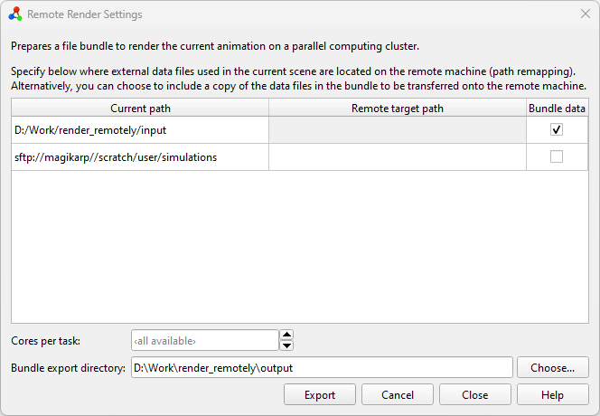

Rendering simulation trajectories on remote computers pro
New in version 3.10.0.
While setting up a visualization can be conveniently done with OVITO on a local desktop computer, rendering a video of a longer simulation trajectory may be a time-consuming process – especially if the visualization involves costly data processing or computation steps. To speed up the frame rendering process, OVITO Pro provides an easy way to offload the work onto a parallel computing cluster.
Tip
Make sure to also check out the Remote rendering tutorial for an in-depth example of how to use this program feature.
How it works
{kind=link}
The function of OVITO Pro prepares a file bundle for you that can be sent to a different computer, e.g. a parallel computing cluster, and render a simulation video on a massively parallel scale. The visualization scene you have created on your local computer is transferred in the form of an OVITO session state file, which means all settings will be precisely preserved when the bundle is unpacked and run on the remote machine.
The generated file bundle contains the necessary job submission scripts and Conda environment files to execute the rendering task on the remote computer cluster. The rendering job will be performed by a auto-generated Python script, which uses the OVITO Python module to load the saved session state on the cluster and render the animation frames one by one. The script is designed to use multiple compute nodes in parallel to distribute the rendering work and will combine the resulting frame sequence into a video file.
A typical visualization setup includes one or more external simulation data files, which you have imported into the OVITO scene. Since these external data files are not part of the session state, they need to be bundled and transferred to the remote machine as well – unless the simulation data is already present on the computing cluster. In that case, OVITO Pro provides the option to remap the local file paths to the correct remote paths on the target machine.
Setting up the remote export
To prepare remote rendering follow these steps in your local OVITO Pro instance:
Build and configure your visualization scene like you would do for producing a video on your local computer. Adjust settings such as output video resolution, animation range, and rendering backend as usual. Notably, you do not need to specify any render output file path, as this will be handled automatically.
Select from the main menu to open the dialog window. In this dialog, you find a table listing all filesystem locations used in the current OVITO scene (column Current path). Paths starting with
sftp://have been loaded from a remote server, other paths point to the local filesystem. For each current path, you can either enter a new remote target path or check the bundle data option.Remapping paths from a current to a remote target path is useful when the data files referenced in the current OVITO scene are already present on the remote machine where rendering is going to take place. For example, if the imported simulation trajectory was loaded locally from
/Users/daniel/simulation_data/and a copy of data is stored on the remote server under/scratch/daniel/simulation_data/, you can enter the latter path in the Remote target path column.Alternatively, you can select Bundle data. In this case, OVITO Pro will collect all data files referenced in the local scene and copy them into the bundle directory, which is going to be transferred to the remote machine. Note that, if you decide to pack files imported from a remote location (
sftp://URLs), they will first be downloaded to your local computer once you click Export.
Optionally, you can configure the number of CPU cores per render task (i.e. threads per MPI process) by entering a number into the Cores per task field. A value of 0, or leaving the field empty, will let OVITO utilize all available cores on each compute node to render one frame at a time on each node. On the other hand, on a cluster node containing 96 cores, for example, setting Cores per task to 8 means that each node can spawn up to 12 independent workers, rendering 12 images concurrently.
Finally, use the Choose… button to select a local output directory for saving the bundle. Please note that this directory must be empty to avoid accidentally overwriting existing files.
Click on Export to start the bundling process. Alternatively, you can use the Close button to save all settings and close the dialog without performing the bundle export now. Your export settings will be saved along with the scene so that you can come back later and resume the export process.
Transferring the bundle directory
Once the bundle has been created on your local computer, you should transfer the complete directory to the target machine using your favorite file transfer tool, e.g. scp, FileZilla, Cyberduck , or WinSCP.
Tip
We recommend copying the files to a fast scratch filesystem. Please refer to your computing center’s documentation for additional information.
Executing the render job on the remote computer cluster
To start the rendering task on the remote computer cluster, follow these steps:
Log in to the remote computer via SSH and change into the bundle directory.
Install or update the Conda environment using the
remote_render_ovito.ymlfile provided in the bundle directory:If you haven’t created a Conda environment named
remote_render_ovitoyet, you can set it up by running the command:conda env create -f remote_render_ovito.yml
If the environment already exists, it is recommended to update it based on the new
remote_render_ovito.ymlfile that is part of the bundle to ensure that all required packages are installed:conda env update -n remote_render_ovito -f remote_render_ovito.yml --prune
Open the file
submit.sh.template, which is a template for a job submission script, in a text editor.Assuming you use the Slurm queuing manager on your cluster, this file already contains commands to activate the Conda environment, set required environment variables, and execute the rendering script on the compute nodes (via
srun ...).However, you still need to add all the
#SBATCHsettings required by your HPC environment to the top of the Slurm job script. Additionally, you might need to include specificmodule load ...directives before theconda activate remote_render_ovitocommand to ensure the Conda base system and Python are loaded.Once you have filled in
submit.sh.template, rename the file tosubmit.shand submit it to your cluster’s queuing system using the appropriate command, such assbatch submit.sh.After the rendering job is complete, you can find all rendered images in the
frames/subdirectory. Moreover, a video file namedvideo.mp4will appear in the main bundle directory.
See also
Additional notes and troubleshooting
While the instructions provided above are designed to work in many HPC cluster environments, they may not be a perfect fit for every situation. Here are some common questions and answers to help you address potential issues:
- Which queuing systems are supported?
The provided job submission file (
submit.sh.template) is tailored for use with Slurm. If you are using a flux-based queuing system, you should be able to directly submit theflux run ...command found insubmit.sh.templatein your flux environment. For all other queuing systems, thesubmit.sh.templatefile needs to be adapted manually.- What if the render job times out?
Simply resubmit the render job from the bundle directory. The rendering script will automatically detect which trajectory frames have already been rendered and will continue from where it left off.
- Which operating systems on the target machine are supported?
Remote rendering is currently only supported on Linux-based computer clusters. For preparing the bundle you can use OVITO Pro running on Linux, MacOS, and Windows machines.
- Are other conda-like package managers supported?
Yes, the rendering process has also been tested with micromamba` and should work with microconda or anaconda as well. Please note that if you choose to use a conda alternative, you will need to replace all instances of the conda command.
- What should I do on computer clusters without internet access?
If your computer cluster lacks internet access, you can consider using conda-pack to relocate the required Conda environment to your remote machine. This approach is untested and success is not guaranteed.
- How can I add missing packages to the conda environment?
During packaging, OVITO Pro attempts to identify all installed Python packages in your local environment – to install them also in the remote environment in case they are needed by your visualization setup. However, in rare cases, OS or package version mismatches may occur or some packages may be missed. To resolve this, manually edit the
remote_render_ovito.ymlfile and add the missing packages. If you encounter this issue frequently, please contact the OVITO developers.- Which renderer should I use?
Many compute clusters do not provide the third-party libraries required for the
OpenGLRenderer. Therefore, you might need to instead select one of the other rendering backends of OVITO that work in headless system environments.- How can I test / debug the rendering process?
First, make sure you have created the Conda environment from the file
remote_render_ovito.ymlas described above. Then execute the following commands adopted fromsubmit.sh.templateon the target machine:conda activate remote_render_ovito export CONDA_LD_LIBRARY_PATH=${CONDA_PREFIX}/x86_64-conda-linux-gnu/sysroot/usr/lib export LD_LIBRARY_PATH=${CONDA_LD_LIBRARY_PATH}${LD_LIBRARY_PATH:+:$LD_LIBRARY_PATH} mpirun flux start remote_render_task.py
Note that
srunhas been replaced bympirunto run the process on the local node. If you encounter any errors, you can append-vor-vvto theremote_render_task.pyscript to get additional output in thelogs/directory:mpirun flux start remote_render_task.py -vv